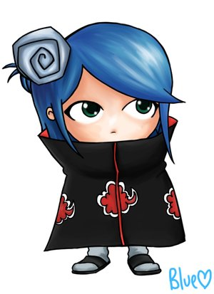

KONAN
Konan (小南 Konan?) Perempuan yang mengaku dirinya sebagai bibinya Detektif Conan. Padahal sebenarnya dia itu rivalnya dia. Ia bergabung dengan Akatsuki karena dikejar-kejar oleh teroris tanpa alasan. Kemampuan utamanya adalah mengubah tubuhnya menjadi berlembar-lembar kertas bergambar barbie yang setiap hari dia browse di internet yang setajam Keris. Dia gak bisa memakai jurusnya ketika sudah tersiram air, Makanya dia gak berdaya di hadapan Tukulman.